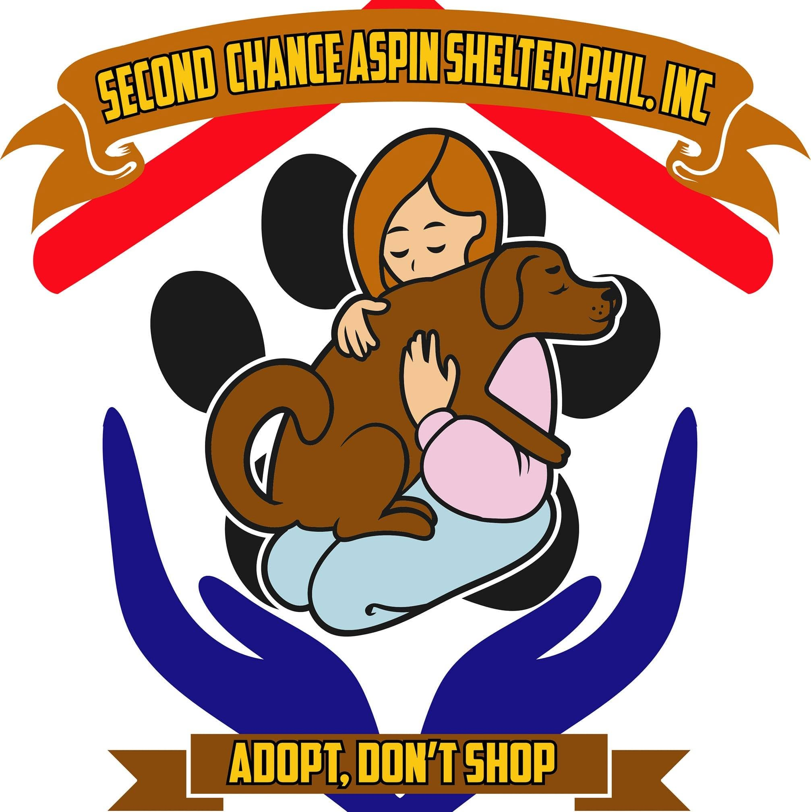

🏠
Adopt
Browse profiles of vaccinated, vetted Aspins ready for a forever home.
View adoptable dogs →SECASPI rescues, rehabilitates, and rehomes the Philippines' native dogs — the Aspin — connecting stray animals with people ready to give them a second chance.

Whether you have a spare room, a spare peso, or just a phone and a moment — there's a way in.
Browse profiles of vaccinated, vetted Aspins ready for a forever home.
View adoptable dogs →Fund food, vaccines, and medical care for dogs currently in intake. Every peso is tracked and reported.
Support the shelter →Spotted an Aspin in need? Submit a rescue report with location and photos so our team can respond quickly.
File a report →A few of the Aspins waiting in our shelter right now.
A stray is reported or surrendered and brought in for a health and temperament assessment.
Vaccination, deworming, and recovery time with our volunteer-run medical team.
Profile goes live for adoption, matched against applicant lifestyle and home setup.
Home check, adoption agreement, and a follow-up visit within the first month.
Tell us where the animal is and our team will respond as quickly as we can.
Tap to pin the exact spot
The live page renders an interactive map here.
Donors who've gone above and beyond for our rescues.
Your donation funds food, vaccines, and shelter for dogs waiting for their second chance.